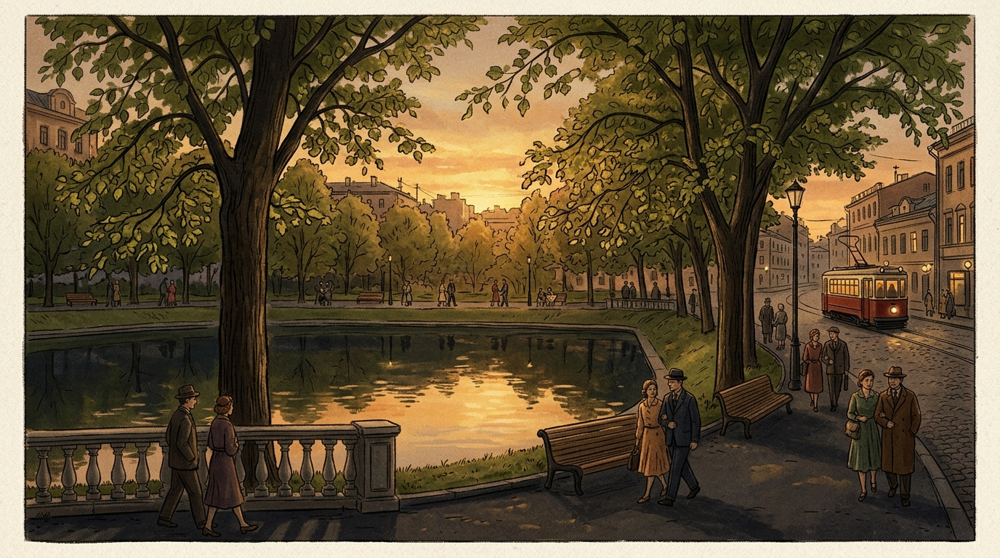

Никогда не разговаривайте с неизвестными
Жаркий майский закат на Патриарших прудах и встреча с иностранцем
«...Так кто ж ты, наконец?» — «Я — часть той силы, что вечно хочет зла и вечно совершает благо».
— Гёте. «Фауст»

Краткое содержание главы
Однажды весною, в час небывало жаркого заката, в Москве, на Патриарших прудах, появились два гражданина. Первый из них, одетый в летнюю серенькую пару, был маленького роста, упитан, лыс, свою приличную шляпу пирожком нес в руке, а на хорошо выбритом лице его помещались сверхъестественных размеров очки в черной роговой оправе.
Второй — плечистый, рыжеватый, вихрастый молодой человек в заломленной на затылок клетчатой кепке — был в ковбойке, жеваных белых брюках и в черных тапочках. Первый был не кто иной, как Михаил Александрович Берлиоз, председатель правления одной из крупнейших московских литературных ассоциаций, сокращенно именуемой МАССОЛИТ, и редактор толстого художественного журнала, а молодой спутник его — поэт Иван Николаевич Понырев, пишущий под псевдонимом Бездомный.
Попав в тень чуть зеленеющих лип, писатели первым долгом бросились к пестро раскрашенной будочке с надписью «Пиво и воды». Тут следует отметить первую странность этого страшного майского вечера. Не только у будочки, но и во всей аллее, параллельной Малой Бронной улице, не оказалось ни одного человека. В тот час, когда уж, кажется, и сил не было дышать, когда солнце, раскалив Москву, в сухом тумане валилось куда-то за Садовое кольцо, — никто не пришел под липы, никто не сел на скамейку, пуста была аллея.
— Дайте нарзану, — попросил Берлиоз.
— Нарзану нету, — ответила женщина в будочке и почему-то обиделась.
— Пиво есть? — сиплым голосом осведомился Бездомный.
— Пиво привезут к вечеру, — ответила женщина.
— А что же есть? — спросил Берлиоз.
— Абрикосовая, только теплая, — сказала женщина.
— Ну, давайте, давайте, давайте!..
Абрикосовая дала обильную желтую пену, и в воздухе запахло парикмахерской. Напившись, литераторы немедленно начали икать, расплатились и уселись на скамейке лицом к пруду и спиной к Бронной. Тут приключилась вторая странность, касающаяся одного Берлиоза. Он внезапно перестал икать, сердце его стукнуло и на мгновение куда-то провалилось, потом вернулось, но с тупой иглой, засевшей в нем. Кроме того, Берлиоза охватил необоснованный, но столь сильный страх, что ему захотелось тотчас же бежать с Патриарших без оглядки.
В этот момент раскаленный воздух сгустился перед ним, и соткался из этого воздуха прозрачный гражданин престранного вида: на маленькой головке жокейский картузик, клетчатый кургузый воздушный же пиджачок... Гражданин ростом в сажень, но в плечах узок, худ неимоверно, и физиономия, прошу заметить, глумливая. Берлиоз зажмурил глаза, а когда открыл их, увидел, что все прошло, мираж растворился, а вдали по аллее к ним приближается высокий иностранец в дорогом сером костюме, с тростью, набалдашник которой выполнен в виде черной головы пуделя.
Речь между литераторами шла о большой антирелигиозной поэме, которую Иван Бездомный написал для очередного номера журнала, но, по мнению Берлиоза, неверно истолковал главный образ. Берлиоз доказывал поэту, что Иисуса как личности вообще не существовало на свете и что все рассказы о нем — простые выдумки, самый обыкновенный миф. Слушавший их неподалеку иностранец вежливо попросил разрешения присесть и вступил в беседу.
Загадочный собеседник с разными глазами — правым черным, мертвым, и левым зеленым, совершенно безумным — поразил писателей своей осведомленностью: он не только свободно говорил о Канте, но и утверждал, что лично завтракал с философом, а затем тихим, вкрадчивым голосом добавил, что доказательств бытия Божия существует не пять и не шесть, а семь. И прежде чем пораженные литераторы опомнились, он спокойно предсказал, что сам Берлиоз сегодня вечером погибнет нелепой, но точной смертью: ему отрежет голову трамваем женщина — русская, комсомолка, — потому что Аннушка уже купила подсолнечное масло, и не только купила, но даже разлила.
Ошеломленные словами незнакомца, которого они поспешно приняли за сумасшедшего или за иностранного шпиона, Берлиоз и Бездомный все еще спорили с ним о том, кто управляет жизнью человеческой, если не сам человек. Незнакомец усмехнулся: «Кирпич ни с того ни с сего никому и никогда на голову не свалится. В частности же, уверяю вас, вам он ни в каком случае не угрожает. Вы умрете другой смертью». И, достав золотые часы с алмазным треугольником на крышке, он предложил литераторам не расстраиваться, а послушать то, что происходило на самом деле в Ершалаиме четырнадцатого числа весеннего месяца нисана.